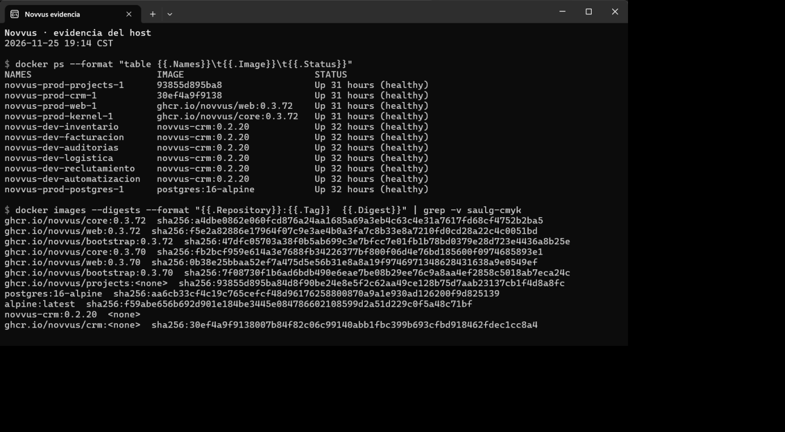

Registro del ambiente que produce las capturas y las pruebas de esta entrega. Los identificadores sha256 son la huella de cada imagen: permiten comprobar que la versión evaluada es exactamente la que describe el reporte técnico.
| Imagen | Digest · ID local | Tamaño | Creada |
|---|---|---|---|
| ghcr.io/novvus/core:0.3.72 | sha256:a4dbe0862e060fcd876a24aa1685a69a3eb4c63c4e31a7617fd68cf4752b2ba5 | 172 MB | 12 nov |
| ghcr.io/novvus/web:0.3.72 | sha256:f5e2a82886e17964f07c9e3ae4b0a3fa7c8b33e8a7210fd0cd28a22c4c0051bd | 1.32 GB | 12 nov |
| ghcr.io/novvus/bootstrap:0.3.72 | sha256:47dfc05703a38f0b5ab699c3e7bfcc7e01fb1b78bd0379e28d723e4436a8b25e | 290 MB | 12 nov |
| ghcr.io/novvus/crm | sha256:30ef4a9f9138007b84f82c06c99140abb1fbc399b693cfbd918462fdec1cc8a4 | 298 MB | 2 nov |
| ghcr.io/novvus/projects | sha256:93855d895ba84d8f90be24e8e5f2c62aa49ce128b75d7aab23137cb1f4d8a8fc | 299 MB | 9 nov |
| postgres:16-alpine | sha256:aa6cb33cf4c19c765cefcf48d96176258800870a9a1e930ad126200f9d825139 | 420 MB | 5 nov |
| novvus-crm:0.2.20 | sha256:cdf1c4ce14060e856d75a9283d5c1230cc8c6a451b7d71afb92d83e8055c7111 | 288 MB | 4 nov |
Los módulos crm y projects se ejecutan anclados por digest, no por etiqueta: el compose fija el sha256 para que un pull posterior no cambie el binario. La última fila es la imagen base de los módulos: se publicó en el registro personal (ghcr.io/saulg-cmyk/crm:0.2.20, pública) y en el host se etiqueta como novvus-crm:0.2.20; los seis contenedores de desarrollo la ejecutan con el código de cada módulo montado en /app/module (sección 6).
| Contenedor | Imagen | Salud | Puerto publicado |
|---|---|---|---|
| novvus-prod-web-1 | ghcr.io/novvus/web:0.3.72 | healthy | 8077 → 3000 |
| novvus-prod-kernel-1 | ghcr.io/novvus/core:0.3.72 | healthy | interno |
| novvus-prod-postgres-1 | postgres:16-alpine | healthy | interno |
| novvus-prod-crm-1 | novvus/crm@30ef4a9 | healthy | interno |
| novvus-prod-projects-1 | novvus/projects@93855d8 | healthy | interno |
| novvus-dev-reclutamiento | novvus-crm:0.2.20 | healthy | interno |
| novvus-dev-logistica | novvus-crm:0.2.20 | healthy | interno |
| novvus-dev-auditorias | novvus-crm:0.2.20 | healthy | interno |
| novvus-dev-automatizacion | novvus-crm:0.2.20 | healthy | interno |
| novvus-dev-facturacion | novvus-crm:0.2.20 | healthy | interno |
| novvus-dev-inventario | novvus-crm:0.2.20 | healthy | interno |
Solo la capa web publica un puerto al equipo del usuario. Kernel, base y módulos viven en la red interna del compose y no son alcanzables desde el navegador.

# imágenes con su digest · estado y salud · huella exacta del núcleo docker images --digests docker ps --format "table {{.Names}}\t{{.Image}}\t{{.Status}}" docker image inspect ghcr.io/novvus/core:0.3.72 --format '{{json .RepoDigests}}' # regenerar el registro de texto bash evidencia/collect.sh
| Recurso | Total | En uso | Tamaño | Recuperable |
|---|---|---|---|---|
| Imágenes | 12 | 7 | 4.38 GB | 2.64 GB |
| Contenedores | 12 | 11 | 713 kB | 4 kB |
| Volúmenes | 3 | 3 | 74.8 MB | 0 |
| Caché de construcción | 0 | 0 | 0 | 0 |
Las cinco imágenes que no están en uso son versiones anteriores conservadas en la caché local. Se pueden liberar con docker image prune -a; el respaldo de la base vive en el volumen pgdata, no en las imágenes.
| Referencia | Digest | Tamaño |
|---|---|---|
| ghcr.io/saulg-cmyk/crm:0.2.20 | sha256:cdf1c4ce14060e856d75a9283d5c1230cc8c6a451b7d71afb92d83e8055c7111 | 288 MB |
Es la única imagen del ambiente que se redistribuye: es propia, no comercial. Se incluye comprimida en evidencia/crm-0.2.20.tar.gz (67.4 MB, 11 capas) con su suma de verificación al lado; el paquete público del registro permite comprobar que el archivo coincide con la huella.
sha256sum -c evidencia/crm-0.2.20.tar.gz.sha256 docker load -i evidencia/crm-0.2.20.tar.gz